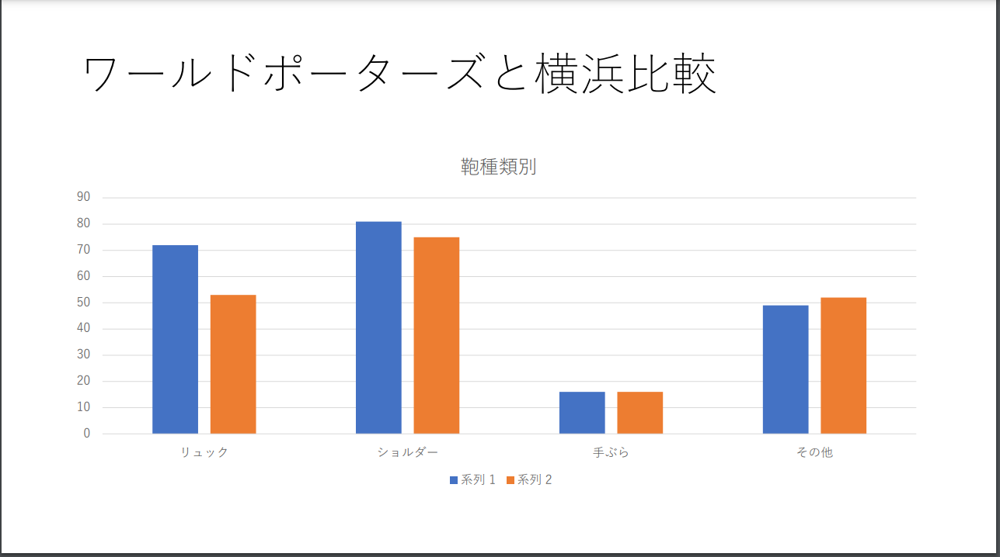
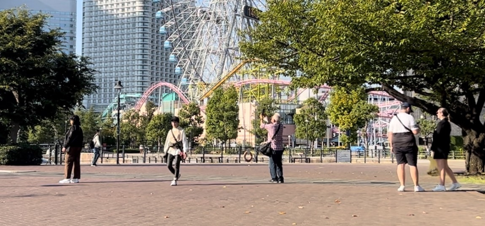
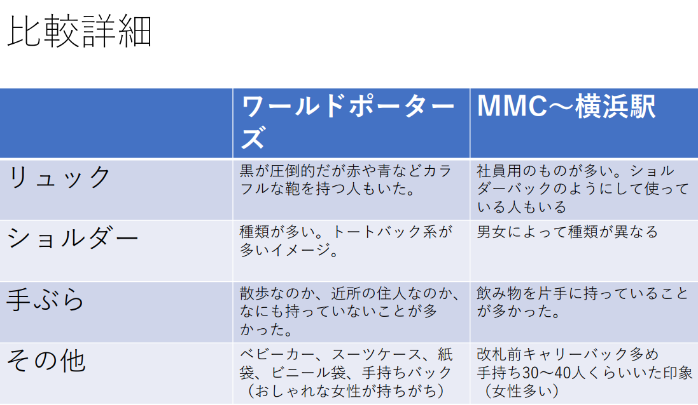

野外観測
～観測～
観察対象：鞄の種類（リュックサック、ショルダーバッグ、手ぶら、その他）
観測場所＆観測方法
- 定点観測 ワールドポーターズ
- 移動観測 MMCから横浜駅
観測結果

観測結果を図式化するとこのようになった。（系列1はワールドポーターズ、系列2はMMCから横浜駅）
実際は定点観測のワールドポーターズが長く観測していたため平均値化して記録した。
結果を見るとどちらもショルダーバックが最も多いことがわかる。
自分はワールドポーターズでショルダーバッグを数えていたためわかるが圧倒的に多かった。
リュックサックがワールドポーターズの方が多かったことにMMCから横浜駅を調査していた者は驚いていた。
確かにあちらの方面はオフィス街であり、調査日が平日であったためその反応は納得である。
実はワールドポーターズはちょうどこの日ツアー客のような人々が多く
その方たちがほとんど全員リュックサックを背負っていたため、このような結果になったと考えられる。

これはワールドポーターズ前でとれた映っている人全員ショルダーバッグだった奇跡の一枚です。
まとめ

結果をまとめるとこのようになった。
ワールドポーターズの近くはコスモワールドがあったりと遊び場が多いため荷物にならないショルダーバッグ系が多かった。
種類こそ多かったが色もカラフルなものがMMCから横浜駅に比べて多かった。
ベビーカーや紙袋、手持ちバッグの人たちもいた。
今回の調査を通して平日か休日か朝か昼か夜かなど状況次第でいくらでも結果は変わるのではないかと思った。
おそらく天候も影響するのではないかとも感じた。